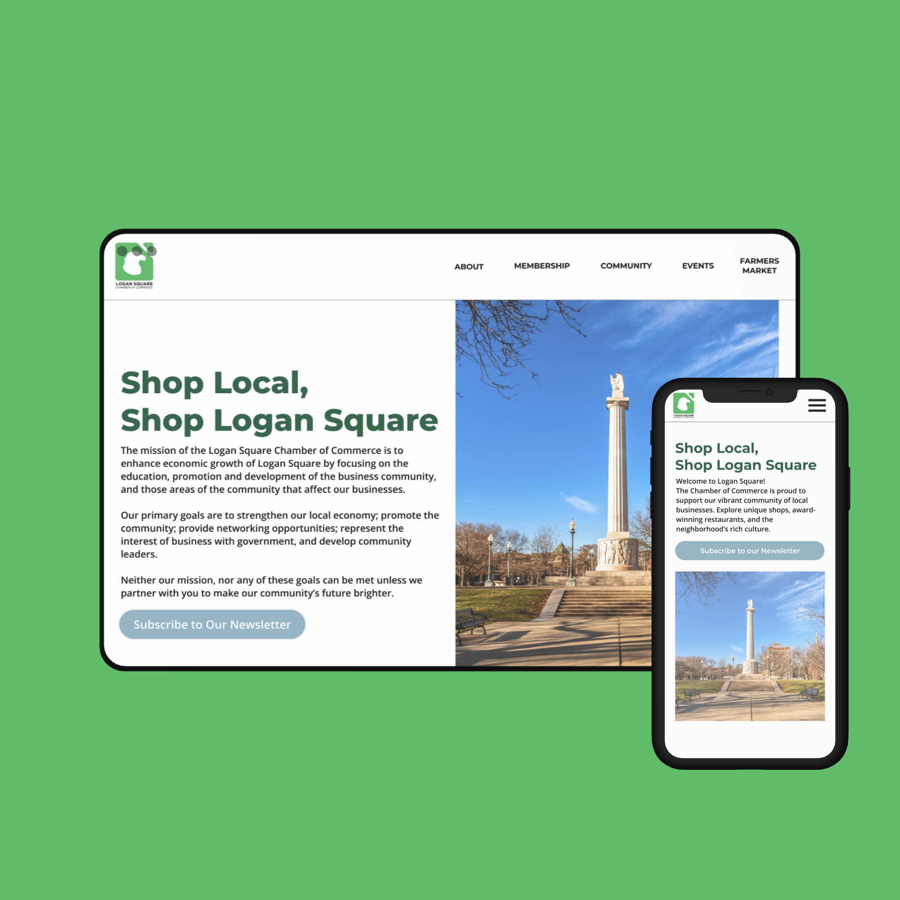

Logan Square Chamber of Commerce
Redesigning Connection, Locally
A full website redesign for the Logan Square Chamber of Commerce, aimed at modernizing its digital presence, improving user experience for small business owners and residents, and establishing a more cohesive brand identity.
- UX/UI
- Branding
- Development